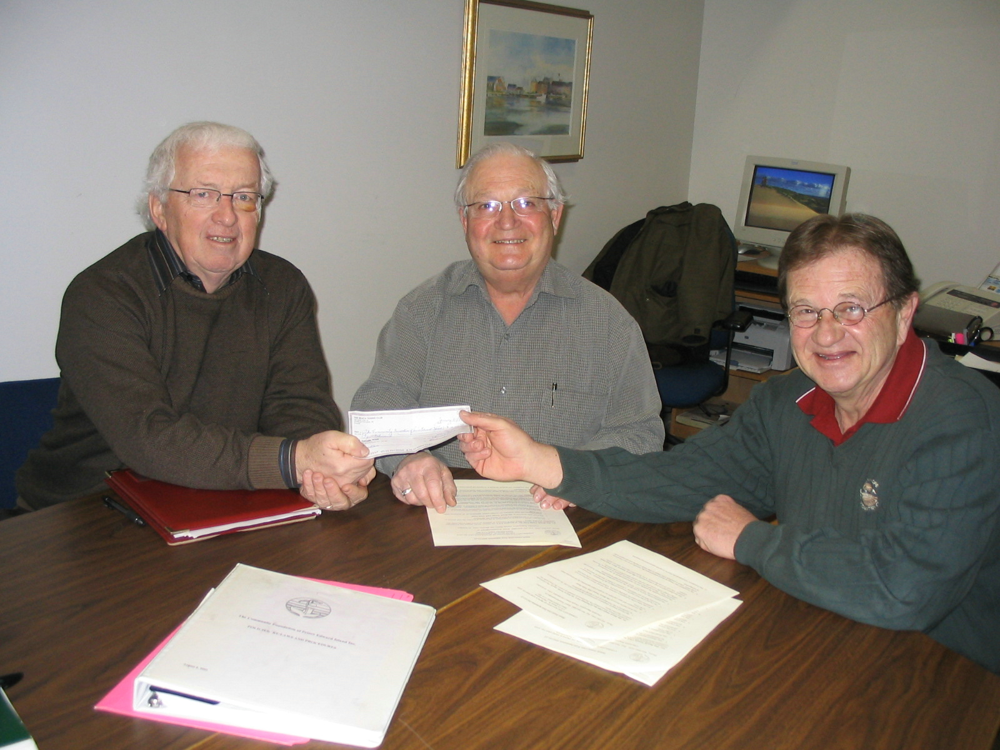

No. 61 February14, 2007

Norman Carruthers, President of CFPEI, with Dr. Doug Cudmore, President of the Beach Tennis Club and David Campbell, Secretary of the Club
Thirty years ago, Gordon and Helen MacDonald were among the founders of The Beach Tennis Club, Inc. in Stanhope, for the benefit of the many summer residents in the area. Gordon gave lessons to many junior members at the time the Club began, and for several years after that.
In 2005 the Club decided to sell the land and as a result created an award to honour the MacDonalds. During their deliberations, the Club turned to the Community Foundation of PEI , a group established for the sole purpose of helping individuals and groups develop and administer endowments - and the Foundation is now a partner in the venture. The public is invited to make contributions to the fund and will receive a charitable tax receipt from the Foundation.
Grants from the Beach Tennis Club Endowment will be made annually to Sport PEI to provide a prize to the top junior male and female tennis
players.
Club President Dr. Doug Cudmore and Secretary David Campbell were on hand to sign the agreement with the Foundation in January 2007, which will see this award presented in perpetuity to these top young tennis players.
In speaking of the Beach Tennis Club, David Campbell recalled a packed summer schedule for residents of the development. It was the favoured meeting place for young and old alike.
The Community Foundation is an Island wide, volunteer driven non profit organization whose mission is “To improve the quality of life in PEI by providing a vehicle for donors to meet their charitable interests in perpetuity at a minimum cost and a maximum convenience”. CFPEI administers over 30 funds with an investment value totaling $900,000. It makes grants to other Island charitable organizations.
___________________________________
The Community Foundation News is an informal newsletter, in electronic form only, edited and published by, and at the whim of, Don Glendenning. Think of it as a letter from a friend. Forward this to others who may be interested. For further information, check our website, www.cfpei.ca or Email me at: don@glendenning.net